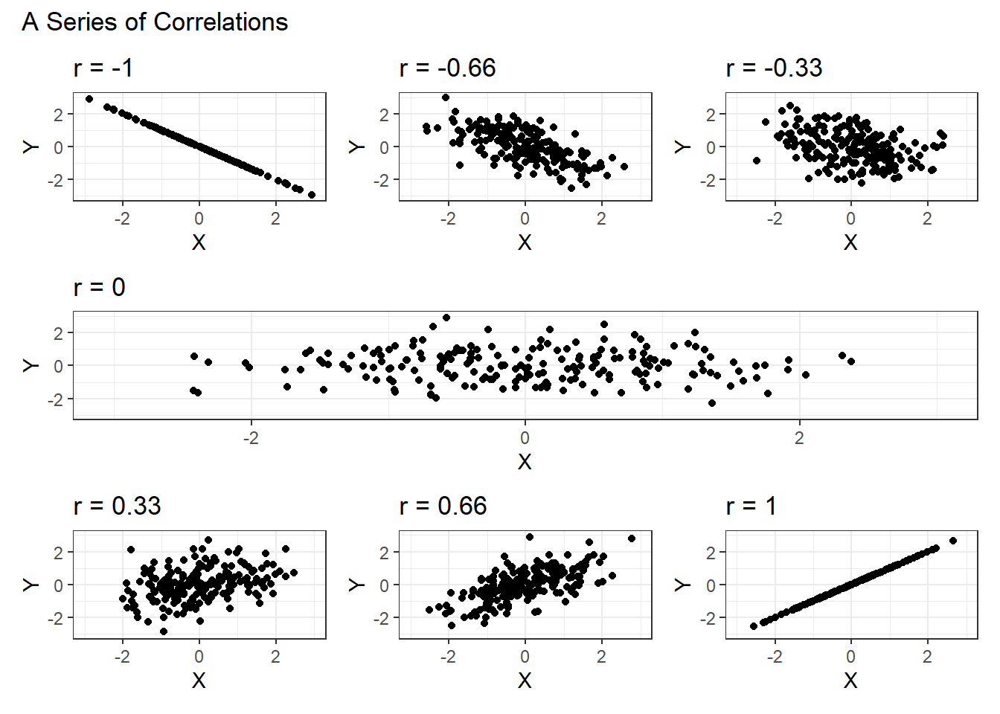

4 Visualizing with ggplot2
At this point, you might be wondering how I managed to win all of those trophies in my office.1 The short answer: ggplot2. What is ggplot2, you ask?2 It’s a data visualization package from the tidyverse which allows you to build highly customizable (and sometimes beautiful) graphics. It’s also the topic of this chapter.
But first, we need to step back and talk a little bit more about description, the purpose of data visualization, and where this all fits in. We’ll continue from the previous chapter with a brief refresher on descriptive statistics, then move on to the principles of data visualization, and finish with some practical applications of ggplot2. Our end goal for today is to create something informative and rather nice-looking, like this:3
4.1 Descriptive Statistics
In the previous chapter, we learned how to use dplyr functions to summarize data. We started with individual-level observations (i.e., GSS respondents) and used group_by() , summarize(), and mutate() to distill our granular data into summary statistics, such as the proportion of GSS respondents by religious affiliation or the mean number of children by respondent’s degree level. We can’t say much yet about whether more Americans are Protestant or Catholic or whether U.S. college graduates tend to have more or less children than high school graduates — these questions require inference — but, we’re now able to produce some of the statistics we’ll need to examine these types of questions later on.
The point of producing descriptive statistics, like proportions or means, is that they allow us to identify characteristics of a set of observations (usually, a sample). For quantitative variables, if you recall from your statistics class, we can describe data with different types of measures. We have, for instance: measures of central tendency, which give us an indication of where the center of our distribution is (or what the typical observation may be); measures of spread, which tell us how far apart observations are from the center of the distribution; and what we might call other distributional measures, which can tell us how many values are in our sample or what the largest and smallest values may be. Categorical variables are simpler and we can generally describe them with a frequency (count) or relative frequency (the count expressed as a proportion or percentage) alone.
4.1.1 Measures for a Single Quantitative Variable
The tables below provide a brief overview of some of the measures we’ve already used or might use to describe a quantitative variable.
Central Tendency
| Measure | Description | R Function |
| Mean | The sum of the values divided by the count. It is sensitive to outliers. | mean() |
| Median | The middle value, where half of the values are above and half are below. It is resistant to outliers. | median() |
Spread
| Measure | Description | R Function |
| Variance | The sum of squared deviations from the mean divided by the count minus one.4 It gives us a sense of how far values typically are from the mean. | var() |
| Standard Deviation | The square root of the variance.5 The more commonly reported measure of spread which, again, tells us how far values typically are from the mean. | sd() |
| Interquartile Range (IQR) | The distance between the 75th percentile value and the 25th percentile value. It gives us an indication of the spread for the middle-most values. | IQR() |
Other Distributional Measures
| Measure | Description | R Function |
| Minimum | The smallest value. | min() |
| Maximum | The largest value. | max() |
| Count | The number of values. | n() |
Example
Below is a table of descriptive statistics for the popular vote share received by candidates in the 2016 U.S. Presidential election by state (including the District of Columbia). Note, the unit of observation is a U.S. state and so we can read this as saying that Trump received 4.09% of the vote share in his lowest performing state and 68.17% in his highest, with a mean of 48.26% and standard deviation of 11.92% across states.
| candidate | median | mean | var | sd | iqr | min | max |
|---|---|---|---|---|---|---|---|
| Trump | 48.17 | 48.26 | 142.03 | 11.92 | 16.20 | 4.09 | 68.17 |
| Clinton | 46.17 | 44.61 | 148.49 | 12.19 | 15.73 | 21.88 | 90.86 |
| Johnson | 3.44 | 3.72 | 2.05 | 1.43 | 1.79 | 1.19 | 9.34 |
| Other | 2.74 | 3.41 | 12.30 | 3.51 | 1.53 | 0.00 | 24.32 |
As a general rule, we don’t use variance in our descriptions and we report mean and standard deviation together. These latter two are especially important for certain inferential methods.
4.1.2 Measure for Two Quantitative Variable
To these univariate characteristics, we can add a measure for describing the relationship between two quantitative variables: the correlation coefficient.
| Measure | Description | R Function |
| Correlation (\(r\)) | A measure of the strength and direction of the linear association between two quantitative variables. | cor() |
In statistics, we generally make a distinction between an association, a relationship between two variables, and a correlation, or the linear association between two quantitative variables. Associations can refer to some relationship between variables of any type, but a correlation is a measure we calculate for two quantitative variables using a specific formula (or the cor() function in R). The distinction between association and correlation often gets lost in everyday language, but we’ll try to maintain some precision here.
Correlations range between -1 and +1, with both extremes representing a perfect linear association of data points with some slope. The figure below shows a range of correlations for different sets of observations.

To describe a relationship between quantitative variables, it is useful to talk about:
- Strength, whether there is a strong (closer to -1 or +1) or weak correlation (closer to 0)
- Direction, whether the relationship is positive or negative
- Form, whether the association is linear or non-linear
- Outliers, whether there are observations that break the general pattern
The correlation coefficient is sensitive to outliers, which means that a stray observation can greatly influence the measure, and the general form of the relationship. You can see the effect of both in Francis Anscombe’s classic example. The figure below shows four different sets of observations, each with the same correlation (\(r \approx 0.82\)) and other summary statistics.
4.2 Why Visualize?
This brings us to the central point of this chapter: data visualization isn’t just fun, it is necessary. Correlations and other summary measures can be terribly misleading if used blindly. Checking a visual presentation of our data provides us with the opportunity to ensure that the underlying data matches our expectations. In the case of Anscombe’s quartet, only one of the plots corresponds to what we might expect for a correlation of 0.82.6
There are other clear benefits to data visualization beyond the purely analytic. They can convey complex data in simple terms, for instance, and they can form lasting impressions.

{kind=link}
These communicative benefits can be difficult to overstate. But it is important to remember that as much as we may want to convince others with aesthetically pleasing figures, it is the underlying veracity of our visualizations which matters most. To put it bluntly, if the visualization is eye catching, but uses poor quality data, it is not a good visualization. Similarly, if the visualization presents good data in a misleading way or fails to convey any meaning at all, it is not a good visualization. We need good data to make good visualizations and we must act as good analysts to ensure that accurate meanings are being conveyed.

4.3 Some Principles
What makes for a good visualization then? The unsatisfying answer is that it depends. But, here are at some guiding principles that may be helpful:
Avoid features which distract from the data. Better charts, as Healy (2019) argues, usually maximize the data-to-ink ratio. This means that we don’t want to add extras when they provide no benefit to interpretation and we should ensure that the features of the visualization all speak to the data in some way. We should avoid, for example, making 3D charts when an extra dimension serves no purpose.
Avoid perceptual traps. You have no doubt seen graphs with truncated Y-labels, which can overemphasize volatility in trends. Contrary to what you may have heard, these types of graphs can sometimes be appropriate - especially, when a small marginal change in an otherwise stable trend is of great consequence. But this sort of example belies a bigger issue, which is the challenge of matching the perception of the reader with the actual patterns in the data. You must take care not only when deciding on the appropriate scale for an axis, but also on the type of graph, the ordering and size of various elements, the choice of color gradient, and the relative width and height (aspect ratio) of the final product. Pie charts, as an example of a type of graph, happen to be particularly unintuitive because of the difficulty we human beings have in perceiving the relative size of different segments of a circle. In a bar chart, by contrast, we only need to compare the length of different bars to understand relative size, a much simpler cognitive undertaking.
Use the right measure. When it comes to analyzing data, you will no doubt have many options in terms of the measures you can use to convey your findings. But it is equally important that you choose the measure which is most appropriate for the comparisons you are making. This is not a problem specific to data visualization, per se, but it is one which crops up all too often. If you want, for example, to compare crime rates across geographic units, you will want to adjust your data to a per capita basis.7 If you wish to compare typical worker salaries across countries, you will want to compare medians rather than means.
It may be apparent, in the foregoing discussion, that the most interesting visualizations generally involve two or more variables and bring the reader’s attention to the relationships between them. The principles discussed here are, of course, not intended to be exhaustive and you’ll sometimes find that the choices we make in visualizations come down to taste. At the very least, however, we should all endeavor to use visualizations to convey our information clearly and truthfully.

4.4 Some Practicalities
The everyday graphs we make when conducting data analysis will usually be more functional than pretty, but that doesn’t have to stop us from combining the two today. In the example below, we’ll focus mainly on the mechanics of constructing a visualization using ggplot2 rather than on how to use them analytically.
To get started, we’ll load a new data set called gapminder, which contains data on countries. Conveniently, the gapminder data is located in the gapminder package. As usual, we want to be sure that we’ve installed the package before loading it for the first time.
library(gapminder)
data(gapminder)The data() function used above is an alternative to gapminder <- gapminder. It loads the gapminder data from the package into a gapminder object in our environment. You can use either, but it’s good to keep learning new functions at this stage so that you can understand what they do when you see them elsewhere.
As will become second nature to you to you soon, we can inspect this data using glimpse(), view(), or by clicking on the object in the environment pane.
glimpse(gapminder)Rows: 1,704
Columns: 6
$ country <fct> "Afghanistan", "Afghanistan", "Afghanistan", "Afghanistan", …
$ continent <fct> Asia, Asia, Asia, Asia, Asia, Asia, Asia, Asia, Asia, Asia, …
$ year <int> 1952, 1957, 1962, 1967, 1972, 1977, 1982, 1987, 1992, 1997, …
$ lifeExp <dbl> 28.801, 30.332, 31.997, 34.020, 36.088, 38.438, 39.854, 40.8…
$ pop <int> 8425333, 9240934, 10267083, 11537966, 13079460, 14880372, 12…
$ gdpPercap <dbl> 779.4453, 820.8530, 853.1007, 836.1971, 739.9811, 786.1134, …Our new tibble has 1,704 rows and 6 variables (?gapminder provides some more information on the variables). There is something a little bit different about this data compared to the GSS data. Whereas in the GSS data each row corresponds to a separate observation (i.e., a respondent), in the Gapminder data, each row corresponds to a year for a particular country. We have, for instance, a row with data for Afghanistan in 1952 and another row for Afghanistan in 1957 in the next. The unit of observation here is called a “country-year.” Consider for a moment how this might affect the answers you get when using mean() or median().
In the social sciences, we call this format, long data. The differences in the way tabular data is stored has important implications for the way we analyze it. We’ll discuss this more in depth in the next chapter. Luckily for us, the gapminder data is already in an ideal format for ggplot2.
Brief Exercise
As a brief exercise and to refresh your memory, let’s use dplyr to find the minimum and maximum years in the gapminder data. Try it on your own first and then check your answer below.
Answer
gapminder %>%
summarize(min_year = min(year),
max_year = max(year))# A tibble: 1 × 2
min_year max_year
<int> <int>
1 1952 2007Now see whether you can find the minimum and maximum year for each country along with the number of times each country appears in the data.
Answer
gapminder %>%
group_by(country) %>%
summarize(min_year = min(year),
max_year = max(year),
n = n())# A tibble: 142 × 4
country min_year max_year n
<fct> <int> <int> <int>
1 Afghanistan 1952 2007 12
2 Albania 1952 2007 12
3 Algeria 1952 2007 12
4 Angola 1952 2007 12
5 Argentina 1952 2007 12
6 Australia 1952 2007 12
7 Austria 1952 2007 12
8 Bahrain 1952 2007 12
9 Bangladesh 1952 2007 12
10 Belgium 1952 2007 12
# ℹ 132 more rows4.5 How ggplot2 Works
Back to visualizations: much like a cake, ggplot2 involves adding layers. We start with a bare plot which has only our axes and their labels and then we work our way up to the final product, layer by layer.
4.5.1 Making the Base Plot
Just as with dplyr, we can use the pipe operator to work with ggplot2. We first take the Gapminder data and then add a new function, ggplot().
gapminder %>%
ggplot()
Without any arguments supplied, the ggplot() function produces a blank plot (shown above), a canvas we’ll use to paint our visualization. If you are following along in an R Script, you should be able to see this plot in the lower right pane of your R Studio window (under the ‘Plots’ tab) after running it. We’d rather see a completed canvas than a blank canvas, however, so we’re going to supply an argument called mapping. The mapping argument tells ggplot how we are going to map the data to the plot.
gapminder %>%
ggplot(mapping = )This mapping argument, in turn, requires us to specify an ‘aesthetic’ which will always be contained in an aes() function. So now we have:
gapminder %>%
ggplot(mapping = aes())If we were to run this, we would still get a blank plot. The ggplot() function knows we’re using the gapminder data (since we used the pipe operator), but it doesn’t yet know what we would like to see on our x- or y-axes. For this, we need to define the aesthetic characteristics of our plot.
Since our goal is to recreate the graph we saw in the beginning of this chapter, which showed the relationship between GDP per capita (gdpPerCap) and life expectancy (lifeExp), we’ll supply these variables to the x and y arguments inside the aes() function.
gapminder %>%
ggplot(mapping = aes(x = gdpPercap,
y = lifeExp))
Now we have a not-so-blank plot. We can see instead an x-axis, as specified, showing gdpPerCap, and a y-axis, showing lifeExp. But where are our data?
4.5.2 Specifying the Type of Plot
In order to add data, we have to tell ggplot exactly what type of plot we’d like to create. We could produce a scatterplot, for example, which will cause the data to appear as points, or we could create a line graph, which will connect points into lines. There are other options, of course, but these seem like the most logical choices for this plot.
In ggplot(), the different types of plots are called geoms and we can add them as a layer to our base plot by using the + operator followed by the geom_ function that corresponds to the type of plot we want to see. If we wanted to see a line plot, for instance, we would use geom_line(). We want to see a scatterplot, so we’ll use the geom_point() function. Let’s see how the scatterplot looks:
gapminder %>%
ggplot(mapping = aes(x = gdpPercap,
y = lifeExp)) +
geom_point()
We now have a plot which shows us each country-year as a point. The x-value is the GDP per capita of a country and the y-value is life expectancy at birth, a measure of typical longevity. Notice, we didn’t need to supply an argument to geom_point() nor did we have to tell ggplot() anything other than the mapping of x and y (and, of course, the initial source of data, gapminder, via the pipe operator).
ggplot objects are unique in that we can add additional layers by using the + operator to join them to the base plot and each other. Just like with the pipe operator, however, we need to make sure that the + appears at the end of each intermediate line and not at the beginning of a line. Be on the lookout for these subtle syntax errors:
# This will not produce a plot with points,
# because the + operator is in the wrong spot.
gapminder %>%
ggplot(mapping = aes(x = gdpPercap,
y = lifeExp))
+ geom_point()
# This will produce a plot with points.
gapminder %>%
ggplot(mapping = aes(x = gdpPercap,
y = lifeExp)) +
geom_point()4.5.3 Adding a Smoother
Can we add more layers to our plot? You bet. We can, for instance, add a line of best fit on top of our points with a geom_smooth() function:
gapminder %>%
ggplot(mapping = aes(x = gdpPercap,
y = lifeExp)) +
geom_point() +
geom_smooth()`geom_smooth()` using method = 'gam' and formula = 'y ~ s(x, bs = "cs")'The output warning here tells us that geom_smooth() used a default argument and formula to calculate the line of best fit.8
4.5.4 Mapping More Aesthetics
What else can we do with this visualization? Well, we might want to see if there are other elements that can be changed to reveal more patterns in the data. What if we compared the country-level relationship between gdpPercap and lifeExp by continent, for example? We could create a plot for each continent, showing only the relevant countries for each, or we could keep one plot and modify another element like the color of the data points. In this way, each color would represent the continent a country is located in and the points would be visually differentiated.
To do this, we need to modify the aesthetics of our data mapping. We’ll add another argument to the aes() function inside of the ggplot() mapping argument for color. And, of course, since we want to color points by continent, we need to specify color = continent. We’ll skip the line of best fit this time.
gapminder %>%
ggplot(mapping = aes(x = gdpPercap,
y = lifeExp,
color = continent)) +
geom_point()
Now we can see how the relationship between GDP and life expectancy plays out among countries across different continents.
It might also be interesting to see how this relationship plays out by population size. Since population size is a continuous quantitative variable, discrete colors may not be a good choice. We could add a color gradient scale (as you might see in a heat map, for example) or we could modify some other element. What about changing the size of the points according to population? Bigger countries could have larger points and smaller countries could have smaller points with a continuum in between. To do this, we need to add a size argument to the aesthetic mapping, this time according to population (pop).
gapminder %>%
ggplot(mapping = aes(x = gdpPercap,
y = lifeExp,
color = continent,
size = pop)) +
geom_point()You can now see some trends for some specific countries, including a certain rich and high population country in the Americas. Each time we add an aesthetic,ggplot() makes the necessary change to the plot and then adds a key to interpret each element. We now have scales for population (the size value in our aesthetic mapping) and continent (the color value in our mapping). Another optional aesthetic argument you can use is shape, which changes the points from dots to different symbols (like x’s or o’s). line is another option which changes the type of line for geom_line().
Because we have a lot of data points and they’re overlapping, we’re going to skip shape and make it so that the points have some transparency. We can do this by adding an alpha argument to the geom_point() component which controls transparency. alpha takes a value between 0 and 1, where 0 is completely translucent and 1 is not-transparent. We’ll choose a halfway number, 0.5, but you can play around with the different levels to find your preferred value.
gapminder %>%
ggplot(mapping = aes(x = gdpPercap,
y = lifeExp,
color = continent,
size = pop)) +
geom_point(alpha = 0.5)We are getting pretty close to the graph we started the chapter with. At this point, we could add geom_smooth() back to our plot. Take a look at what happens when you do though.
gapminder %>%
ggplot(mapping = aes(x = gdpPercap,
y = lifeExp,
color = continent,
size = pop)) +
geom_point(alpha = 0.5) +
geom_smooth()`geom_smooth()` using method = 'loess' and formula = 'y ~ x'That’s maybe not the result we thought it was going to be. Instead of one smooth curve, as before, we now have a different colored curve for each of the continents. We can also see in the key on the right-hand side that population size is affecting the width of the lines as well.
One thing to know about ggplot2 is that each item added to the ggplot() object inherits ggplot()’s aesthetics. So because we defined color by continent and size by population in ggplot()’s mapping argument, geom_point() and geom_smooth() are also also colored by continent and sized by population.
If we want to instead ensure that the color and size arguments only affect geom_point(), we need to move those aesthetics to geom_point()’s own aesthetic mapping. See below:
gapminder %>%
ggplot(mapping = aes(x = gdpPercap,
y = lifeExp)) +
geom_point(mapping = aes(color = continent,
size = pop),
alpha = 0.5) +
geom_smooth()`geom_smooth()` using method = 'gam' and formula = 'y ~ s(x, bs = "cs")'geom_point()’s mapping accepts the same form of argument as ggplot(). Let’s remove geom_smooth() again anyways, since it doesn’t seem particularly helpful and the plot looks better without it. We can return the color and size arguments to ggplot() or we can leave them as is. Just a few more changes left before we get to a finished product.
4.5.5 Changing Scales
Let’s change the x-axis scale to a logarithmic scale, since the data appears to follow a logarithmic form. Scales can be changed by adding functions from the scale_ family to our plot. Like geom_, there are a number of different options depending on the need. In this case, we want a logarithmic scale for our x-axis in base 10, so we’ll use scale_x_log10().
gapminder %>%
ggplot(mapping = aes(x = gdpPercap,
y = lifeExp,
size = pop,
color = continent)) +
geom_point(alpha = 0.5) +
scale_x_log10()Now we can see the relationship between GDP per capita and life expectancy more clearly. We don’t always have to change the scale of our x- and y-axes, but in this case, the distribution of our x-values calls for it.9 If you don’t add a scale_ function, ggplot2 will simply use the default. We don’t need a scale transformation for our y-axis here, so we’ll skip adding a scale_y_ function and let ggplot2 use the default.
Note that there is a conceptual difference between a scale (the numeric distance between positions on some axis) and labels (how the values of those different positions are recorded). Just because the numbers on the axis are written in a strange or unhelpful format, in other words, doesn’t necessarily mean we that will need to change the scale. We may just need to edit the labels. As you can see in our previous example, even after the scale change, the x-axis labels are still not recorded in the most legible format (scientific notation).
4.5.6 Changing Scale Labels
Changing the labels for axes and other scales can be a bit of a pain. Fortunately, there is a very helpful package we can use called scales.
You should already have a copy of scales installed and you can load it via library().10 Another way to access it’s functions is to use the name of the package followed by :: and the name of the desired function. We used this same method in the previous chapter for knitr::kable().
For the scale on the x-axis, which corresponds to a variable in U.S. dollars, we’ll use the function scales::label_currency().11 We’ll add this helper function to the labels = argument of our scale_ function in the example below. Other useful scales functions include scales::comma and scales::percent - neither of which require parentheses at the end, unlike label_currency().
Since we also want to fix the label for the size function, we’ll also add a scale_ function for our size aesthetic (in a separate object) and then set the labels argument to use commas. See below for both steps put together:
gapminder %>%
ggplot(mapping = aes(x = gdpPercap,
y = lifeExp,
size = pop,
color = continent)) +
geom_point(alpha = 0.5) +
scale_x_log10(labels = scales::label_currency()) +
scale_size(labels = scales::comma)Our scale labels have been fixed and are much easier to read.
4.5.7 Adding Titles
To change the titles of different elements, we can add a labs() function to the end of our object. The labs() function will set titles for each part of the plot according to the values given to a set of corresponding arguments.
In the code below, you can see that we’ve changed the title for the x and y axes, the size key (“Population”), the color key (“Continent”), the overall title of the graph (“Economic Growth and Life Expectancy”), and then added a caption at the bottom.
gapminder %>%
ggplot(mapping = aes(x = gdpPercap,
y = lifeExp,
size = pop,
color = continent)) +
geom_point(alpha = 0.5) +
scale_x_log10(labels = scales::label_currency()) +
scale_size(labels = scales::comma) +
labs(x = "GDP Per Capita (log scale)",
y = "Life Expectancy in Years",
size = "Population",
color = "Continent",
title = "Economic Growth and Life Expectancy",
caption = " Source: Gapminder \n Note: Observations are country-years.")At this point, we have a good looking graph and could call it a day. As you will discover though, there are endless opportunities for customization with ggplot2. It’s the reason why ggplot2 graphics can be made to look so good.
4.5.8 Adding a Theme
Themes are customizable sets of aesthetic characteristics that change things like font types and sizes, the alignment of different elements, and the presence of gridlines. You can adjust many of these things by adding a theme() function to the end of your plot and playing around with the different available arguments.
Alternatively, you can use a theme that someone else has created by installing their package and using the related function. This is often ideal, because you can then find a theme that matches your general preferences and tweak minor elements as needed by overlaying another theme() layer. Playing around with theme settings on your own can be a time consuming affair and in general, isn’t recommend for the personal graphs you use for analytic purposes.
Among pre-packaged themes, ggthemes, for example, is a popular package with themes that mimic the styles used in The Economist (theme_economist()), for example, and the Wall Street Journal (theme_wsj()). You can see some more of the styles available in ggthemes here. The theme I used for the graph at the start of this chapter is called theme_ipsum_rc() which comes from the hrbrthemes package. Remember, if you use a theme from a package, you need to first download the package and then load the library (or access the specific function using ::). Some custom themes, like ipsum, also require you to install and register new fonts in R, which can be a pain.
If you’d like to avoid the trouble of installing extra packages, you can also use some of the default themes provided in ggplot2, many of which are also quite nice. Adding theme_bw() from ggplot2 to the plot from the previous example, for instance, does this:
gapminder %>%
ggplot(mapping = aes(x = gdpPercap,
y = lifeExp,
size = pop,
color = continent)) +
geom_point(alpha = 0.5) +
scale_x_log10(labels = scales::label_currency()) +
scale_size(labels = scales::comma) +
labs(x = "GDP Per Capita (log scale)",
y = "Life Expectancy in Years",
size = "Population",
color = "Continent",
title = "Economic Growth and Life Expectancy",
caption = " Source: Gapminder \n Note: Observations are country-years.") +
theme_bw()You can see that it has added a border to the plot and removed the gray background from both the plot and the scales. Try using theme_minimal(), theme_classic(), and theme_void() to see how they change the aesthetics instead.
4.6 The Final Product
To return to the final product, I’ll use theme_ipsum_rc() from hrbrthemes. I’ll also replace the size_scale argument with a more complicated set of functions that makes it even easier to read.
library(hrbrthemes) # A theme used for graphs
gapminder %>%
ggplot(mapping = aes(x = gdpPercap,
y = lifeExp,
size = pop,
color = continent)) +
geom_point(alpha = 0.5) +
scale_x_log10(labels = scales::label_currency()) +
scale_size(labels = scales::label_number(scale_cut = scales::cut_short_scale())) +
labs(x = "GDP Per Capita (log scale)",
y = "Life Expectancy in Years",
size = "Population",
color = "Continent",
title = "Economic Growth and Life Expectancy",
caption = " Source: Gapminder \n Note: Observations are country-years.") +
theme_ipsum_rc()Whichever plot you choose to use as your final plot, you can save it by clicking on the “Plots” tab in the lower right-hand corner of your R Studio window followed by export. We’ll discuss better ways of doing this later on.
4.7 Other Plots
We’ve so far only covered one type of plot, a scatterplot. It won’t surprise you to learn that there are many other types of plots that we can create using ggplot2. The good news is that the structure and components of plots are generally consistent across types and that once you start creating plots, you can always re-use the code.
A quick example of a line chart using the gapminder data is shown below. Note, we’ve made a few changes. We first filtered the data for a small subset of countries so that our graph won’t be swamped with too many countries. Then we used geom_line() as our geom_ instead of geom_point(). Perhaps most importantly, we’ve set color to represent each country in order to ensure that our data is mapped to the appropriate unit of observation.
my_countries = c('France', 'United Kingdom', 'Italy')
gapminder %>%
filter(country %in% my_countries) %>%
ggplot(aes(x = year,
y = pop,
color = country)) +
geom_line()Try setting color = continent in the example above and see what happens. You end up with a bit of a mess. ggplot2 doesn’t naturally understand the correct unit of observation, so specifying continent as color leads it to believe that it needs connect the data points according to the continent for each year and across years. Since France, Italy, and the U.K. are in the same continent, it draws a line connecting each of the three data points inside each year and then connects them across years, leading to a jagged, meaningless graph.
Here’s a slightly more polished looking version of the initial line graph with some aesthetic and label changes. We can easily change the countries used and other features like the size of geom_line(). Perhaps confusingly, geom_line() can also take a size argument outside of the mapping argument. Note also that you may wish to change the font family in the graphic below to something like ‘Arial’, since you may not have ‘Roboto Condensed’ installed on your computer.
my_countries = c('France', 'United Kingdom', 'Italy')
gapminder %>%
filter(country %in% my_countries) %>%
ggplot(aes(x = year,
y = pop,
color = country)) +
geom_line(size = 2) +
scale_y_continuous(labels = scales::label_number(scale_cut = scales::cut_short_scale())) +
labs(x="Year",
y = "Population",
color = "Country",
title = "Population Growth in Europe",
caption = "Source: Gapminder") +
theme_bw() +
theme(text = element_text(size = 14, family = "Roboto Condensed"),
plot.title = element_text(size = 20, face = "bold"),
axis.title.x = element_text(hjust=1),
axis.title.y = element_text(hjust=1))Last, but not least, we have a bar chart. Here again we’ve filtered for some countries. We’ve then filtered for a specific year, removed color (which works slightly differently for bar charts), and have added the geom_col() geom to specify that it is a bar chart we are making.
my_countries = c('France', 'United Kingdom', 'Italy', "Germany", "Spain")
gapminder %>%
filter(country %in% my_countries) %>%
filter(year == 2007) %>%
ggplot(mapping = aes(x = country,
y = pop)) +
geom_col()We will work through other examples of visualizations, such as the map below, and the quirks of how they work in future chapters.
4.8 Summary
In this chapter, we’ve reviewed some of the measures we might use to describe data, discussed some general principles for producing good data visualizations, and learned how to create and modify some basic plots in ggplot2.
You will likely need to read this chapter and reference the code more than once. ggplot2’s structure is not very intuitive to new users. The more you use it, however, and get a feel for how the different plot elements map to the various objects and arguments, the more control you will have over the visualizations you produce.
So keep practicing and save your work, adding comments so that you can remember what you were doing. Go back to some of the examples used here and play around with the different arguments. Try to change the plot types. Use different scales. See if you can make something interesting. As you inevitably get errors, try to make a mental note of what works and what doesn’t. Eventually, you’ll have generated a stockpile of code that you can re-use and adjust to create the right visualizations whenever you need them.
4.9 Exercises
Here are a few exercises to complete either in-class or on your own for homework.
Use the Gapminder data to produce a line graph showing growth in GDP per capita for the United Kingdom, France and Italy.
Do the same for life expectancy using three other countries of your choice.
Produce a scatterplot which shows the relationship between GDP per capita and life expectancy for all countries in 2007. Produce another which shows the relationship for 1952 and compare the two.
Produce a bar chart for life expectancy among countries in Oceania in 2007.
I have neither trophies nor an office, but let’s not let that spoil things.↩︎
R.I.P. ggplot1 (2006-2008)↩︎
Credit for this visualization and the series of examples derived from it belong to Healy (2019).↩︎
The formula for the sample variance is: \(S^2={{\sum{({x_i - \overline{x}})^2 }} \over{n-1}}\)↩︎
The formula for the sample standard deviation is: \(S={\sqrt{{\sum{({x_i - \overline{x}})^2 }} \over{n-1}}}\)↩︎
For an even more extreme example, see Alberto Cairo’s Datasaurus Dozen, all of which have approximately the same correlation and summary statistics.↩︎
This problem is particularly common in maps, as illustrated in this blog post about density maps.↩︎
‘gam’ stands for general additive model and is one method of adding a line of best fit. ‘lm’, or linear model, is another best fit method.↩︎
GDP per capita is not normally distributed hence the need for a log-transformation here. The decision on whether to transform an axis or not is a statistical matter, which we won’t go into here.↩︎
scalesis contained in thetidverse, but it isn’t automatically loaded when you uselibrary(tidyverse).↩︎The default currency for
label_currency()is U.S. dollars.↩︎